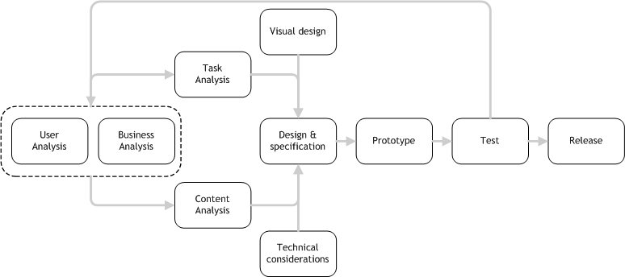
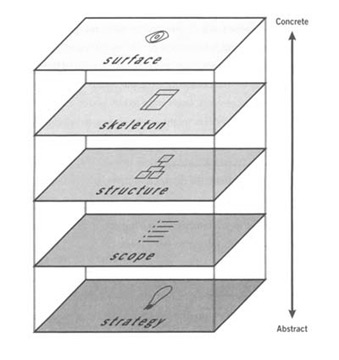

Can anyone else find good examples to share with the rest of us?
Review of WDD31


The "structure" and "skeleton" phases are where Information Architecture (IA) plays a dominant role (but see discussions of big IA v little IA)
IA is very important in the design of a web site. Good information architecture / design facilitates searching and browsing by organizing the patterns inherent in data
Information architects are, effectively, matchmakers - they match site content with audience's goals and (ideally) make the complex clear.